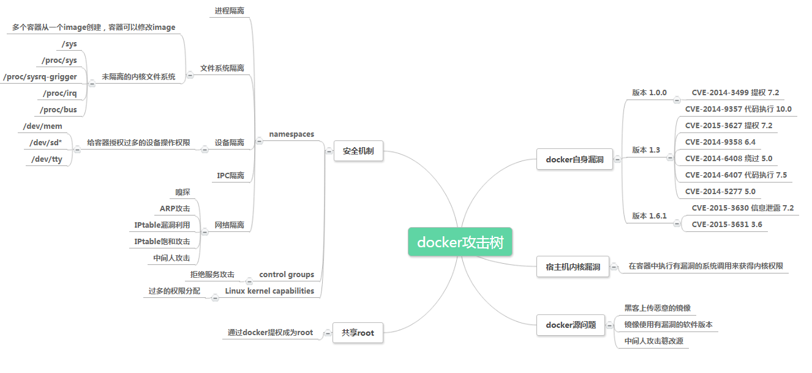

7.3.2. Docker¶
Docker是目前最具代表性的容器平台之一，具有持续部署与测试、跨云平台支持等优点。在基于Kubernetes等容器编排工具实现的容器云环境中，通过对跨主机集群资源的调度，容器云可提供资源共享与隔离、容器编排与部署、应用支撑等功能。
7.3.2.1. 基本概念¶
Docker有三个基本概念，镜像（Image）、容器（Container）、仓库（Repository）。镜像是一个只读的模版，由一组文件系统通过Union FS技术组成。
镜像是静态的定义，容器是从镜像创建的运行实例。容器的本质是进程，拥有自己独立的命名空间。
仓库（Repository） 是集中存放镜像文件的场所，用于存储、分发镜像。
容器可以被启动、开始、停止、删除，每个容器都是相互隔离的，可以把容器看做是一个简易版的 Linux 环境（包括root用户权限、进程空间、用户空间和网络空间等）和运行在其中的应用程序。
7.3.2.2. 组成¶
Docker引擎由如下主要组件构成：Docker客户端（Docker Client）、Docker守护进程（Docker daemon）、containerd以及RunC，它们共同负责容器的创建和运行。
Docker Client是和Docker Daemon建立通信客户端，Docker Client可以通过http/unix socket等方式Daemon建立通信。
Docker Daemon是容器管理的守护进程，在宿主机运行，作为服务端接受来自客户端的请求，主要功能包括镜像管理、镜像构建、REST API、身份验证、安全、核心网络以及编排。Docker daemon通过位于 /var/run/docker.sock 的本地 IPC/Unix socket 来实现Docker远程API，默认非TLS网络端口为2375，TLS默认端口为2376。
containerd 是容器技术标准化之后出现的，用于将容器运行时从 Docker Daemon 剥离。containerd 主要职责是镜像管理、容器执行。
RunC 是 Docker 按照OCF标准制定的一种具体实现，实现了容器启动与停止、资源隔离等功能。
7.3.2.3. 数据¶
Docker的数据主要分为持久化和非持久化数据，默认情况下非持久化存储是自动创建生命周期与容器相同，删除容器也会删除非持久化数据，在Linux环境下，非持久化数据默认存储于 /var/lib/docker/ 下。
7.3.2.4. 网络¶
Docker网络架构源自一种叫作容器网络模型的方案，主要由CNM、Libnetwork、网络驱动构程。
7.3.3. 安全风险与安全机制¶
在考虑Docker安全性的时候主要考虑以下几点
内核本身的安全性及其对命名空间和cgroups的支持
Docker守护进程本身的攻击面
内核的“强化”安全功能以及它们如何与容器进行交互
7.3.3.1. Docker安全基线¶

7.3.3.2. 内核命名空间/namespace¶
Docker容器与LXC容器非常相似，并且具有相似的安全特性。当使用docker运行启动容器时，Docker会在后台为容器创建一组命名空间和控制组。
命名空间提供了一个最直接的隔离形式：在容器中运行的进程看不到或者无法影响在另一个容器或主机系统中运行的进程。
每个容器也有自己的网络堆栈，这意味着一个容器不能获得对另一个容器的套接字或接口的特权访问。当然，如果主机系统相应设置，容器可以通过各自的网络接口交互。如果为容器指定公共端口或使用链接时，容器之间允许IP通信。
它们可以相互ping通，发送/接收UDP数据包，并建立TCP连接，但是如果需要可以限制它们。从网络体系结构的角度来看，给定Docker主机上的所有容器都位于网桥接口上。这意味着它们就像通过普通的以太网交换机连接的物理机器一样。
7.3.3.3. Control Group¶
控制组是Linux容器的另一个关键组件，主要作用是实施资源核算和限制。
Cgroup 提供了许多有用的度量标准，但也有助于确保每个容器都能获得公平的内存，CPU和磁盘I/O; 更重要的是单个容器不能通过耗尽资源的方式来降低系统的性能。
因此，尽管 Cgroup 不能阻止一个容器访问或影响另一个容器的数据和进程，但它们对于抵御一些拒绝服务攻击是至关重要的。它们对于多租户平台尤其重要，例如公共和私人PaaS，即使在某些应用程序开始行为不当时也能保证一致的正常运行时间（和性能）。
7.3.3.4. 守护进程的攻击面¶
使用Docker运行容器意味着运行Docker守护进程，而这个守护进程当前需要root权限，因此，守护进程是需要考虑的一个地方。
首先，只有受信任的用户才能被允许控制Docker守护进程。具体来说，Docker允许您在Docker主机和访客容器之间共享一个目录;它允许你这样做而不限制容器的访问权限。这意味着可以启动一个容器，其中/host目录将成为主机上的/目录，容器将能够不受任何限制地改变主机文件系统。
这具有很强的安全意义：例如，如果通过Web服务器测试Docker以通过API配置容器，则应该更加仔细地进行参数检查，以确保恶意用户无法传递制作的参数，从而导致Docker创建任意容器。
守护进程也可能容易受到其他输入的影响，例如从具有docker负载的磁盘或从具有docker pull的网络加载映像。
最终，预计Docker守护进程将运行受限特权，将操作委托给审核良好的子进程，每个子进程都有自己的（非常有限的）Linux功能范围，虚拟网络设置，文件系统管理等。也就是说，很可能，Docker引擎本身的部分将在容器中运行。
7.3.3.5. Capability¶
默认情况下，Docker采用Capability机制来实现用户在以root身份运行容器的同时，限制部分root的操作。
在大多数情况下，容器不需要真正的root权限。因此，Docker可以运行一个Capability较低的集合，这意味着容器中的root比真正的root要少得多。例如：
否认所有挂载操作
拒绝访问原始套接字（防止数据包欺骗）
拒绝访问某些文件系统操作，如创建新的设备节点，更改文件的所有者或修改属性（包括不可变标志）
拒绝模块加载
其他
这意味着，即使入侵者在容器内获取root权限，进一步攻击也会困难很多。默认情况下，Docker使用白名单而不是黑名单，去除了所有非必要的功能。
7.3.3.6. Seccomp¶
Docker使用Seccomp来限制容器对宿主机内核发起的系统调用。